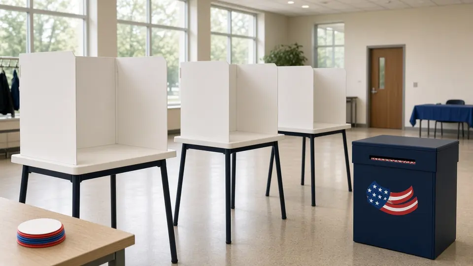
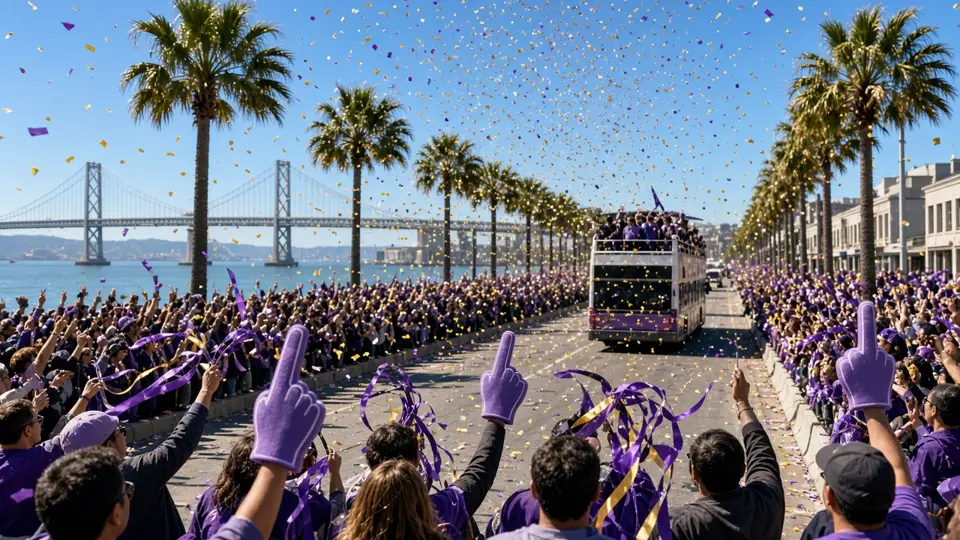

Urban Concierge Brief: SF Bay Area
Tuesday Nov 3 – Thursday Nov 5, 2026 · Snapshot compiled Tue Nov 3, 2026, 2:10 pm PT (Urban Concierge - Bay Area)
What's on

today, Tue Nov 3
Election Day
California General Election and SF Consolidated General Election.
Details →
Wed Nov 4, 12 pm
Golden State Valkyries WNBA Championship Parade
Starts at the Ferry Building and runs along the northbound side of The Embarcadero to Second Street.
 Route map · © OpenStreetMap contributorsDetails →
Route map · © OpenStreetMap contributorsDetails →
More in this brief
Where to eat

No Yelp ratings (Yelp blocks automated loads). New picks this run, each from its Michelin page opened today.
State Bird Provisions, Fillmore, SF (1529 Fillmore St) · Californian · Michelin One Star. A "lively San Francisco staple" pairing dim sum-style service with seasonal California cooking. +1 415-795-1272. https://guide.michelin.com/us/en/california/san-francisco/restaurant/state-bird-provisions
Sorrel, Pacific Heights, SF (3228 Sacramento St) · Contemporary · Michelin One Star. Chef Alexander Hong, trained at Quince, "has a true gift for pasta," with herbs and vegetables from a rooftop garden. +1 415-525-3765. https://guide.michelin.com/us/en/california/san-francisco/restaurant/sorrel
Kokkari Estiatorio, Jackson Square, SF (200 Jackson St) · Greek · in the Michelin Guide. A Greek favorite serving "San Francisco chic with a side of old-world taverna hospitality." Near the Embarcadero, so expect parade closures Wed until 4 pm. +1 415-981-0983. https://guide.michelin.com/us/en/california/san-francisco/restaurant/kokkari-estiatorio
Nopalito, NoPa, SF (306 Broderick St) · Mexican · in the Michelin Guide. Popular with couples and families for dishes like ensalada de nopales and blue-corn fish tacos. +1 415-437-0303. https://guide.michelin.com/us/en/california/san-francisco/restaurant/nopalito
Getting around

Muni and cable cars (carried): $2.85 single ride with Clipper, MuniMobile or tap-to-pay ($3.00 cash), good 120 minutes. Day pass $5.70. Cable car $9.00. Visitor Passports 1-day $15, 3-day $35, 7-day $47. Youth 18 and under ride free. https://www.sfmta.com/getting-around/muni/fares
Muni reroutes: Wed: the F, N, 2, 9, 9R, 12, 14, 14R and 15 are adjusted 5 am–3 pm for the parade (buses run F line service all day). https://www.sfmta.com/travel-updates/valkyries-wnba-championship-parade-wednesday-november-4-2026
BART:
- At about 2:10 pm Tue the BART advisory feed shows only the planned 30-minute delays between Millbrae, SFO and Daly City from 9 pm Sun–Thu.
- Yellow Line late-night single tracking in Contra Costa County through Nov 6 (carried).
- Powell St. Station entrance at 4th and Market closed through Nov 10 (carried).
- Coming up: reduced BART-to-OAK service the night of Nov 4 · more Yellow Line late-night single tracking Nov 12–13 · 24th St–Daly City bus bridge Nov 14–15 · Transbay Tube single tracking Nov 21.
Sources: https://www.bart.gov/schedules/advisories · https://www.bart.gov/guide/airport
Bikes and scooters (from the Oct 23 brief): Lyft Bike $1 to unlock plus $0.19/min classic or $0.49/min ebike, or a $15 day pass. Lime and Spin hold SF permits. No sidewalk riding. https://www.lyft.com/bikes/bay-wheels
SFO cars and rides (from the Oct 23 brief): Rental Car Center via AirTrain Blue Line (24 hours). Lyft and Uber pick up on Level 5 of the Domestic Garage. Taxis at the Arrivals center islands. https://www.flysfo.com/passengers/ground-transportation
Where to stay

Per SF Travel, Union Square has most major hotels and the best transit links (note the Powell BART entrance closure at 4th and Market through Nov 10). SoMa waterfront and Embarcadero hotels sit inside Wednesday's parade closures, so expect limited car access there 8 am–4 pm Wednesday. https://www.sftravel.com/neighborhoods
Assumptions and refresh
- Public data only, from pages opened Tue Nov 3, 2026, around 2:10 pm PT: NWS forecast and alerts, the Caltrans District 4 news index and five posts, the BART advisory feed, SFMTA travel updates and the parade page, and four Michelin pages. Other items carried from earlier briefs. Nobody was contacted and nothing was signed up for.
- This is a snapshot. BayAreaDailySync refreshes it every 8 hours (6 am, 2 pm, 10 pm PT).
- Times are Pacific standard time. Prices only where a cited page lists them.
Not verified
- Yelp ratings (blocked); restaurant hours not checked.
- Warriors vs. Miami Heat on Thu Nov 5 is still unconfirmed (nba.com's schedule feed returned an access error this run), so it's left off the list.
- Chase Center, SF Symphony and SF Opera calendars didn't show readable dates this run, and SFJAZZ blocked the load, so no arts events were added.
- Valkyries parade organizer page not opened; details come from SFMTA.
- Election Day polling hours not checked.
- Fares, Lyft Bike, Lime and Spin pricing and SFO notes not re-checked.
- BART Yellow Line and Powell entrance items carried, not re-read on bart.gov news pages.
- Exact timing of Mill Valley ramp closures depends on tides; Caltrans gives no schedule.
What changed since the last brief
What changed since the last brief (Tue 6:10 am): NWS issued a Coastal Flood Advisory for SF from 6 am Wed through 1 pm Mon Nov 9 (morning high tides up to 1.6 ft above normal), and today's rain now looks light (under a tenth of an inch). Caltrans added tide-related closures of the NB US-101 to SR-1 ramp in Mill Valley and confirmed the Devil's Slide tunnel closure Thu night. Restaurant picks rotated.